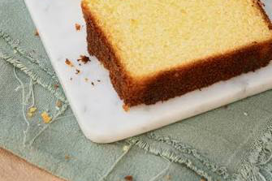
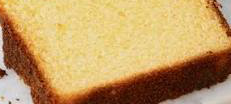
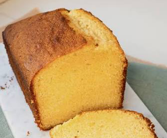

RECETA · PUBLICACIÓN
Budin
Budin grande

Datos e ingredientes
- Introducción / resumen
- Budin grande
- Ingredientes
- azucar manteca harina leche
- Autor
- fer
Preparación paso a paso

Paso 1
mezclar azucar y manteca

Paso 2
batir 4 minutos

Paso 3
hornear